MR-VMU-Tropic hardware reference¶
Connectors, pinouts and on-board devices of the NXP MR-VMU-Tropic, an open-source Vehicle Management Unit (flight controller) built around the NXP i.MX RT1064 MCU. The board carries the Dronecode DS-009 connector set (telemetry, GPS, I2C, CAN and debug), two ESC headers, a GPS and safety-switch port, an SPI port for an on-screen display, 100BASE-T1 Ethernet, a microSD slot and a USB device port. All pin data below comes from the rev F schematic SPF-94468_F. The photos show a rev C board; the connector positions are the same.
Each card shows three things per pin: the function, the net name in the schematic and the i.MX RT1064 pad the signal ends up on. Parts in between, such as the CAN transceiver and the Ethernet PHY, are shown too. Pin 1 is the square pad.
Board overview¶
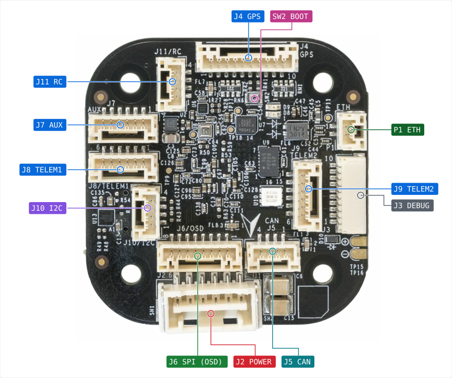
Not visible here:
J1 USB (bottom view)
J12 PWM_B (bottom view)
J13 PWM_A (bottom view)
CN1 MICROSD (bottom view)
Bottom side, with the two ESC headers, the USB-C port and the microSD slot:
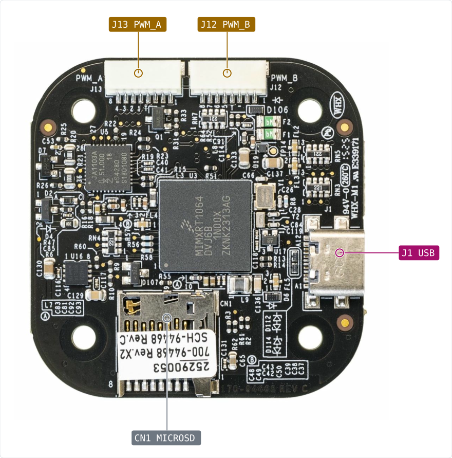
Connector index¶
Ref |
Function |
Connector |
Details |
|---|---|---|---|
Main CN1 MICROSD |
microSD card slot |
microSD push-push, 8 pins plus card detect |
Four-bit SD interface on the first SD host of the chip, used for logging. The card detect switch goes to a separate chip pin. |
Main J1 USB |
USB 2.0 Type-C device port |
USB Type-C receptacle (USB4110-GF-A) |
Serial download port of the i.MX RT1064 boot ROM, and the port used for flashing. The board is always a USB device. VBUS can also power the board through protection switch U13. |
Main P1 ETH |
100BASE-T1 single pair Ethernet |
JST-GH 1x2, top entry |
|
Main J2 POWER |
Power module input, 5 V plus battery monitor I2C |
Molex Clik-Mate 1x6 (5024430670) |
|
Main J3 DEBUG |
SWD debug and console, DS-009 debug full layout |
JST-SH 1x10 |
|
Main J4 GPS |
GPS module with compass, safety switch and buzzer |
JST-GH 1x10 (BM10B-GHS-TBT), top entry |
|
Main J5 CAN |
CAN FD (TJA1462) |
JST-GH 1x4, top entry |
|
Main J6 SPI (OSD) |
External SPI port, meant for an on-screen display board |
JST-GH 1x8 (BM08B-GHS-TBT), top entry |
|
Main J7 AUX |
Spare serial port with handshake lines |
JST-GH 1x6 (BM06B-GHS-TBT), top entry |
|
Main J8 TELEM1 |
Telemetry serial port 1 with flow control |
JST-GH 1x6 (BM06B-GHS-TBT), top entry |
|
Main J9 TELEM2 |
Telemetry serial port 2 with flow control |
JST-GH 1x6, top entry |
|
Main J10 I2C |
External I2C bus |
JST-GH 1x4, top entry |
|
Main J11 RC |
Serial radio control receiver port |
JST-GH 1x4, top entry |
|
Main J12 PWM_B |
Motor outputs 5 to 8 (ESC header) |
JST-SH 1x8 |
|
Main J13 PWM_A |
Motor outputs 1 to 4 (ESC header) |
JST-SH 1x8 |
Power and debug¶
Main J2 POWER¶
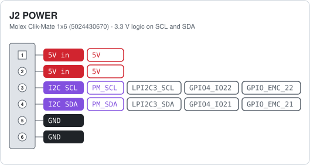
This is the main supply of the board. The power module feeds 5 V into pins 1 and 2, and the board makes its own 3.3 V and 1.8 V from it. Pins 3 and 4 are an I2C bus that reads voltage and current from the power module.
Warning: Feed only 5 V into pins 1 and 2. A higher voltage damages the board, because there is no regulator behind this connector.
Main J3 DEBUG¶
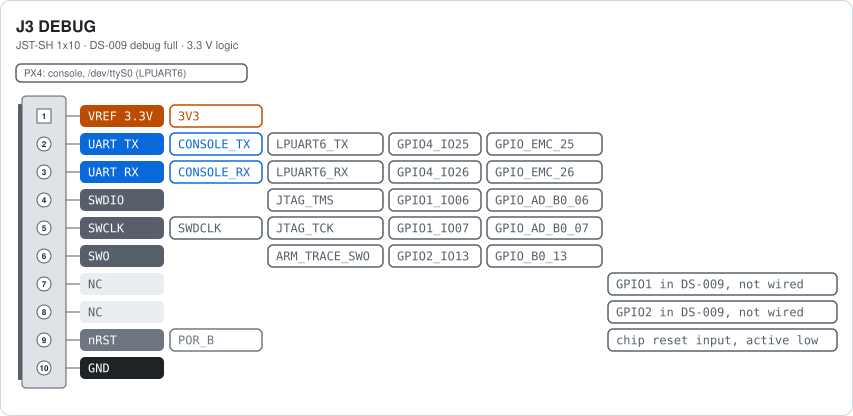
Pin 1 is a 3.3 V reference output for the debug probe. Pins 2 and 3 are the serial console. Pins 4, 5 and 6 are the SWD lines of the i.MX RT1064. Pin 9 is the reset line of the chip, which is also pulled up on the board.
Warning: Pin 1 is an output at 3.3 V, not a supply input. Use a debug probe that works at 3.3 V and never drive this pin.
Serial ports¶
Main J8 TELEM1¶
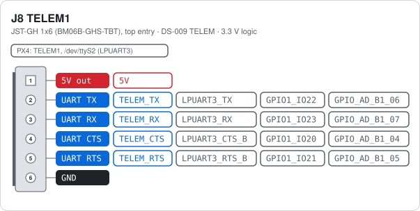
Standard DS-009 telemetry layout: 5 V, TX, RX, CTS, RTS, ground. Pin 1 gives 5 V out through ferrite FL3.
Warning: Pin 1 is a 5 V output. Never feed power into it.
Main J9 TELEM2¶
Same layout and same circuit as TELEM1, on a second serial port of the chip. Pin 1 gives 5 V out.
Warning: Pin 1 is a 5 V output. Never feed power into it.
Main J7 AUX¶
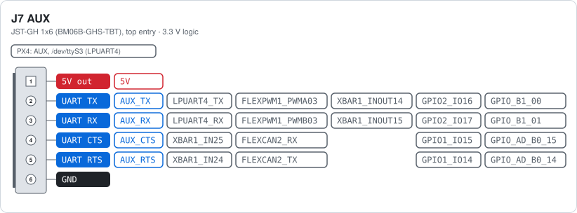
Pin 1 provides a 5 V output. Pins 2 and 3 are assigned to LPUART4, which is used as the AUX serial port (/dev/ttyS3 in PX4). Pins 4 and 5 are labeled CTS and RTS in the schematic; however, these pins cannot be multiplexed to the LPUART4 hardware CTS and RTS functions and therefore cannot provide hardware flow control. If RTS/CTS flow control is required, it must be implemented in software using these pins as GPIOs.
The signal pins on this connector support several alternative functions through pin multiplexing. Pins 2 and 3 can be configured as PWM outputs using FlexPWM1 module 3, channels A and B. All four signal pins can support quadrature encoder or trigger functions through XBAR1, while pins 4 and 5 can instead provide a second CAN interface using FlexCAN2 with an external CAN transceiver.
Use of these alternative functions requires appropriate software and pin-multiplexing configuration and is left to the user.
Warning: Pin 1 is a 5 V output. Never feed power into it.
Note: Confirm that the ESCs do in fact follow the BetaFlight connector standard, as there are many ESCs with variations on this pinout. Also note that wires are regularly soldered to pads on the ESC side.
Main J11 RC¶
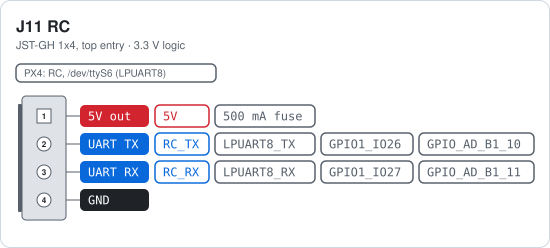
Serial port for a digital receiver such as ELRS or CRSF. Pin 1 gives 5 V out through a resettable fuse, so a shorted receiver cannot pull down the board supply.
Warning: Pin 1 is a 5 V output. Never feed power into it.
GPS, I2C and CAN¶
Main J4 GPS¶
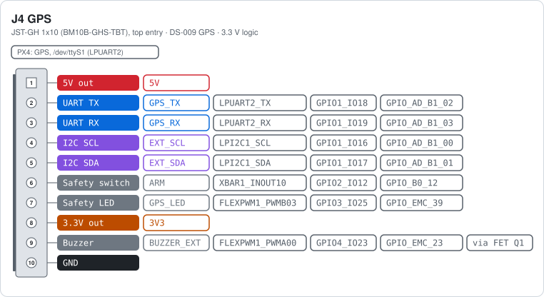
Pin 1 gives 5 V to the GPS module and pin 8 gives 3.3 V. Both are outputs. Pins 2 to 5 are the GPS serial port and the shared I2C bus, the same bus as on the I2C connector J10. Pin 6 reads the safety switch and pin 7 drives its LED. Pin 9 is the buzzer, switched to ground by FET Q1, so the board only pulls this pin low.
Warning: Pins 1 and 8 are power outputs. Never feed power into them.
Main J10 I2C¶
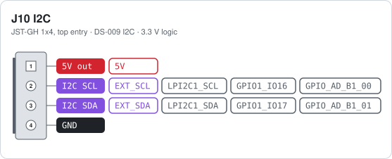
The same bus as pins 4 and 5 of the GPS connector, so devices here share those addresses. Pin 1 gives 5 V out.
Warning: Pin 1 is a 5 V output. Never feed power into it.
Main J5 CAN¶
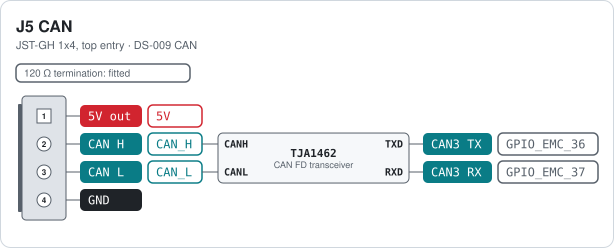
The TJA1462 transceiver runs from 5 V and talks to the chip at 3.3 V. CANH and CANL together form the differential bus, TXD and RXD are the logic lines to the i.MX RT1064. The 120 Ω termination is fitted, so this port is one end of the bus.
Warning: Pin 1 is a 5 V output. Never feed power into it.
Motors¶
Main J13 PWM_A¶
Four motor signals for a four-in-one ESC. The pin order follows the Betaflight ESC connector standard, so a standard 8-pin ESC cable fits. The signals carry normal PWM or DShot. The same pads are also FlexIO1 pins, so DShot or other protocols can be bit-banged by FlexIO. Pin 4 is the ESC telemetry line, shared with the other ESC header. The ESCs send their UART telemetry (voltage, current, RPM, temperature) on this one wire, and the chip receives it on LPUART7 in single-wire mode. It is receive only; the chip never transmits here. Pins 1 (battery voltage) and 3 (current) of the Betaflight standard are not connected on rev F, so the board does not read battery voltage or current from the ESC.
Note: This header has no 5 V pin. Many ESCs have a BEC that powers the flight controller, but this board does not use it. It gets its 5 V from the power module on J2 POWER.
Main J12 PWM_B¶
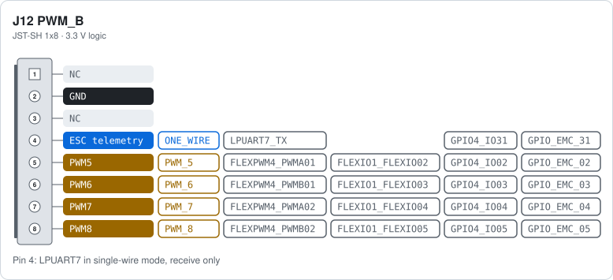
Same circuit and same Betaflight pin order as PWM_A, for motors 5 to 8. The signals carry normal PWM or DShot. The same pads are also FlexIO1 pins, so DShot or other protocols can be bit-banged by FlexIO. Pin 4 is the same shared ESC telemetry line: LPUART7 in single-wire mode, receive only. Pins 1 (battery voltage) and 3 (current) of the Betaflight standard are not connected on rev F, so the board does not read battery voltage or current from the ESC.
Note: This header has no 5 V pin. Many ESCs have a BEC that powers the flight controller, but this board does not use it. It gets its 5 V from the power module on J2 POWER.
SPI and Ethernet¶
Main J6 SPI (OSD)¶
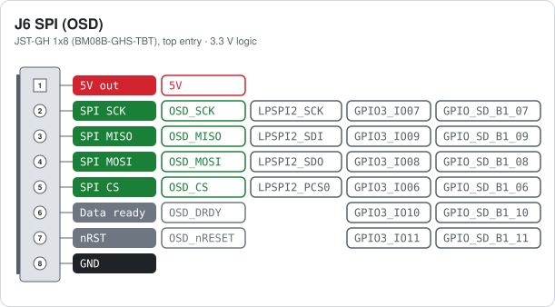
Pin 1 gives 5 V to the add-on board, the signal lines work at 3.3 V. Pin 6 is a data-ready input and pin 7 a reset output. This port is separate from the SPI bus of the on-board sensors.
Warning: Pin 1 is a 5 V output. Never feed power into it.
Main P1 ETH¶
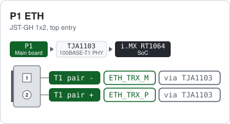
Two wires carry send and receive at 100 Mbit/s. The TJA1103 does the physical layer and talks to the chip over RMII, so there is no direct link between these pins and a chip pad. Use a twisted pair and keep both wires the same length. The other end needs a 100BASE-T1 device or a media converter.
Main other connectors¶
Ref |
Function |
Connector |
Notes |
|---|---|---|---|
J1 USB |
USB 2.0 Type-C device port |
USB Type-C receptacle (USB4110-GF-A) |
Serial download port of the i.MX RT1064 boot ROM, and the port used for flashing. The board is always a USB device. VBUS can also power the board through protection switch U13. |
CN1 MICROSD |
microSD card slot |
microSD push-push, 8 pins plus card detect |
Four-bit SD interface on the first SD host of the chip, used for logging. The card detect switch goes to a separate chip pin. |
Notes¶
The connectors marked DS-009 on their card (TELEM1, TELEM2, GPS, I2C, CAN and the debug port) follow the Dronecode DS-009 connector standard, so standard cables fit.
The two ESC headers (PWM_A and PWM_B) follow the Betaflight ESC connector standard, so a four-in-one ESC with a standard 8-pin cable fits. Pins 1 (battery voltage) and 3 (current) are not connected on this board.
The board runs from 5 V on the power module connector J2, or from USB. Every other 5 V pin is an output.
Warning: Never feed power into the 5 V pin of a JST-GH connector. Power the board through J2 or USB only.
Cheat sheet¶
All connector cards on one A4 landscape sheet: cheat sheet PDF.